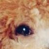
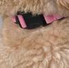
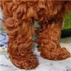
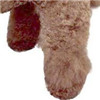

泰迪犬（Teddy Dog）
泰迪犬 只是贵宾犬的一种美容方式，受到了大家的喜爱，久而久之，大家就把修着这种造型的贵宾犬统称为泰迪。
- 全名：
- 贵宾犬
- 别称：
- 泰迪、卷毛犬
- 毛长：
- 长毛犬
- 智商：
- 第2名
- 体型：
- 小型犬
- 价格：
- 1500-6000元
- 饲养：
- 好养(86%网民)
- 身高：
- 20-38cm
- 体重：
- 4-8kg
- 寿命：
- 15-18年
- 功能：
- 玩赏犬,伴侣犬
- 原产地：
- 欧洲
- 粘人程度：
- 喜叫程度：
- 友善程度：
- 掉毛程度：
- 美容程度：
- 体味程度：
- 口水程度：
- 可训程度：
- 运动量度：
- 城市适应：
- 耐寒程度：
- 耐热程度：
- 整体
- 毛发
- 颜色
-
头部
-
小而圆，有轻微突出。鼻梁、颊骨和肌肉平滑，从枕骨到鼻梁的长度等于口鼻的长度。
-
-
眼睛
- 
-
乌黑，通常形状为椭圆形，眼神机灵，成为聪慧表情的重点。眼睛主要缺陷：眼睛圆、突出，太大或颜色太浅。
-
耳朵
-
下垂的耳朵紧贴头部，耳根位置在眼睛水平线上或者低于眼睛的水平线，耳廓很长，很宽，表面上有浓密的毛覆盖。但是，耳朵不能过分的长。绝对不能长于面颊。
-
-
鼻子
-
长、直且纤细，唇部不下垂，眼部下方稍凹陷，下颚大小适中，轮廓明显，不尖细，不上翘。主要缺陷：下颚不明显。
-
- 尾巴
- 胸部
-
颈部
- 
-
颈部，背线和躯干：颈强壮，颈长可以使头部高高抬起。喉部皮肤紧。肩部强壮，肌肉丰满。主要缺点：颈部似母羊。背线起始于肩胛最高点终止于尾根部，水平，既不倾斜也不拱起，肩部后可轻微凹陷。
-
前驱
- 
-
强壮，肩部肌肉丰满。肩胛骨向后伸展，长度约等于上腕的长度。主要缺点：陡峭的肩部。
-
后驱
- 
-
后躯的角度与前躯协调。从后面看，两后肢直，相互平行。膝关节屈曲，肌肉丰厚。大腿和下腿的长度几乎相等。后脚跟短，与地面垂直。站立时，后脚尖在臀部后端的稍后方。主要缺点：牛样的跗关节。

- 基本信息
- FCI标准
- 性格特点
- 生活习性
- 优点/缺点
- 喂养方法
- 鉴别挑选
-
泰迪犬的品种介绍
泰迪犬其实就是贵宾犬的一种，据说它是法国品种。不过它也是具有自己独特的特点的，这个犬种十分的可爱，饲养的人们也是比较多的。因此它也非常的受到大家的欢迎。泰迪犬不但特点非常的多，而且优点也不少。由于它的优秀特点，使它也成为了世界上饲养数量最多的小型犬，遍布世界各地。即使是我们国家，仍然有很多的家庭在饲养着它们。
泰迪犬的发展起源
贵宾犬曾经是贵妇人的宠物。18世纪繁殖成小的长卷毛犬，长毛经修饰后能展现贵宾犬独特优雅的气质，贵宾犬还称长毛狮子犬，贵妇犬。贵宾犬分为标准型，迷你型，玩具型三种。它们之间的区别只是在于体型的大小不同，其他犬种样式描述都一样。对贵宾犬来说不需要将卷曲的毛全部剪掉，但是要定期整理，每天梳毛，不要让其打结，以损害美观。贵宾犬性格十分活泼，记忆力好、智商很高，顺从人意，可从事马戏团的各种表演。
泰迪犬的生理指标
健康犬只的体温： （由肛门测定）
贵宾犬
小型犬：幼犬 38.5-39℃
成犬： 38-39℃
中型犬：幼犬 38.5-39℃ 成犬 38-38.5℃
大型犬：幼犬 38.2-39℃ 成犬 37.5-39℃
心跳：成犬70-130次/分 幼犬200次/分
呼吸：10——30次/分
脉搏：70——120次/分
正常心轴： +40度——+100度
总血量：占体重的8%——9%
潮气量：251——432毫升
收缩压：14.9千帕（允许范围12.7——18.1）
舒张压：7.5千帕（允许范围5.8——9.7）
染色体：78条
血浆量：55.2 ml/kg bw（允许范围47.7——73.0）
全血量： 94.1 ml/kg bw（允许范围76.57——107.3）
寿命： 13——20岁（宠物狗最长26岁）
犬的性成熟期：在8-12个月之间
犬的繁育周期：每年可繁殖1-3胎，每胎可生1-6只
犬的妊娠期：大约在58日-65日之间
仔犬的开眼时间：大约在出生后10-16天
仔犬开始有听觉的时间：大约在出生后第12-17日左右泰迪犬智商描述
泰迪犬智商在宠物犬中是很高的，排名第二，对语言和肢体动作的理解很到位，但是服从力很差，经常对主人的吩咐凭喜好对待。对泰迪犬的日常训练非常重要，由其是小时候的训练，泰迪犬小时候非常顽皮，破坏力极强，家中如果没有人又不能很规律的上下班同时又没有时间经常陪伴他们的朋友，我奉劝不要养泰迪犬，他在孤独时会用家中物品发泄不满，随着他的破坏程度的加强对他产生厌恶感从而由爱生恨，有可能生气会越发对他不好最终导致放弃他们。破坏家中的物品只是内患，他们如果特别留恋与主人一起在家，可能会大叫不止，泰迪犬的叫声很有穿透力，邻居会有意见，甚至报警，从而产生外患，内外交困的第一选择可能是放弃他们。
泰迪犬很聪明，但是聪明也有苦恼，你准备好接受苦恼。泰迪犬的名字传说是来自法语的“beagle”，即小的意思。在英国被视为猎犬，且因体型属于小型犬，因此专门用来猎捕兔子，所以才有“猎兔犬”的称号，其嗅觉敏锐因此又有“闻血猎犬”的称号。泰迪犬猎兔犬的吠声比其他猎犬高亢，故有“森林之铃”之称。
其实泰迪犬是宠物狗中很聪明的狗狗，它聪明伶俐，所以受到了很多人的喜欢，在饲养泰迪犬的时候，主人们就会发现泰迪犬的可爱与聪明了，这也让很多的主人都非常的喜欢。 -
泰迪犬的FCI标准
玩具贵宾的FCI编号：172D
玩具贵宾的FCI所属组别 ：第九组：伴侣犬和玩具犬组
玩具贵宾的身高：雄性玩具贵宾肩高9.5-11.0英寸(24.0-28.0厘米) 雌性玩具贵宾肩高9.5-11.0英寸(24.0-28.0厘米)
玩具贵宾的体重范围：雄性玩具贵宾体重0.0-0.0磅(0.0-0.0公斤) 雌性玩具贵宾体重0.0-0.0磅(0.0-0.0公斤)
玩具贵宾的头部(头部、面部、眼睛、耳朵、鼻镜、嘴部、口吻、鄂部、牙齿)
头部：显著，呈直线型，与身体成比例。长度必须稍大于马隆肩高度的2/5。不能太重或过大，但也不能过于精细。皮肤下需棱角分明。 头骨：型状明显;宽度小于头长(中轴形成一个大约16到18度的轴面角)的一半。从上方看，整个头骨在纵向上成椭圆型，轮廓稍微凸起。纵轴稍有发散。眼睛上方拱起;适度明显，覆盖有长毛。前额有皱纹，两眼之间的很宽，朝枕骨方向渐窄，非常明显(迷你型会不太明显)。 止部：和中等身材的犬一样，几乎不明显。 鼻子：明显且发育良好，枕骨垂直;鼻孔张开。黑色、白色和灰色贵宾犬鼻子的颜色为黑色;褐色贵宾犬鼻子的颜色为褐色;杏色贵宾犬鼻子的颜色为整个暗褐色范围的褐色，也可能为黑色，没有最佳的颜色，都可接受，但避免可能的褪色。 口吻：上轮廓成直线型;口吻的长度大约是头骨长度的9/10。下颚的两个分支几乎平行的伸出。下鄂而非上唇边缘勾勒出口吻的下轮廓。 唇：轻微发育，相当紧，中等厚度，上唇位于下唇上，不超过下唇。黑色、白色和灰色犬的嘴唇为黑色;杏色犬的嘴唇颜色为整个褐色系列，也可能为黑色，没有最佳的颜色，都可接受。嘴角必须明显。 颌/牙齿：位置正常，牙齿坚固。在评判或育种选择时，上鄂缺少第一或第二磨牙，下鄂缺少第二或第三磨牙不会受到惩罚。 面部：不显著。由脸颊骨勾勒出形状。外眼窝轮廓分明但只是稍稍内陷。咀嚼肌和脸颊解剖基底稍微发育;颧骨有很细微的拱起。 眼睛：带有热切的表情，位于止部的水平位置，稍微倾斜。眼睑的轮廓使眼睛成杏仁状。黑色、白色和灰色贵宾犬及杏色贵宾犬的眼睛为黑色或暗褐色;褐色贵宾犬的可能为暗琥珀色。 耳朵：很长，沿脸颊两边下垂，位于从鼻子上端开始在外眼角以下穿过的延长线上，扁平，耳根后部变宽，耳尖圆，覆有很长的卷毛。贵宾犬的耳朵未达到嘴角不属“优秀”级别。
玩具贵宾的躯干(颈部、胸部、肋骨、腰部和背部、躯体前部、皮肤)
颈部：结实，颈背后略微拱起，长度中等，比例良好。足够使头能尊贵地高高昂起。无垂肉。颈部相交处椭圆;长度低于头的长度。 身躯：贵宾犬整体的躯干外型有着很好的比例，躯干的长度通常大于马隆肩的高度。 肩部：适度发达 背部：背线短而和谐。既不拱起也不塌陷。从地面到马隆肩的高度差不多和从地面到臀部的高度相等。 腰部：坚实，肌肉发达。 臀部;浑圆但不倾斜。 胸部：下降到与肘水平，宽度相当于深度(从脊柱到胸骨)的2/3。胸腔周长从肩下量起，至少应比马隆肩的高度多10厘米。 肋骨：肋笼椭圆，脊背处宽。 前胸：正常大小;胸骨末端必须稍微突出，位于相当高的位置，以易于头部尊贵的高高抬起。 腹部：折起但不过分。
玩具贵宾的四肢(前驱、肩部、上肢、胶骨关节、胶骨、足掌、后躯、大腿、飞节、关节和飞节指甲)
前躯：前腿非常直，相互平行，优雅，肌肉发达，骨骼良好。肘到地面的高度是马隆肩到地面高度的5/9。 肩部：倾斜，肌肉发达。肩胛骨和上肢形成90°至110°角。 上臂：上肢长度与肩胛骨长度相对应。 骹骨：结实，但不巨大，轮廓看上去几乎是笔直的。 脚：相当小，厚实，呈卵形。脚趾明显圆拱，强壮，紧凑，有蹼，紧紧的连在坚硬厚实的脚垫上。黑灰两色，黑色犬的趾甲为黑色，褐色犬的趾甲为褐色，白色犬的趾甲可能为深至黑色的整个角质色系列，必须与其毛色相一致。白色趾甲仍为失格。杏色犬的趾甲颜色范围为暗褐色到黑色，无最佳颜色，其间颜色均可接受。 后躯：从背后看，后腿直，两腿相互平行，肌肉发达且非常明显。飞节关节有明显角度。腰节-股骨所成角度，胫骨-跗骨所成角度必须非常明显，以免在一些腿直立的情况下造成臀部倾斜。 大腿：肌肉发达，强壮。 飞节：垂直。贵宾犬出生时后腿不应有狼爪。
玩具贵宾的尾巴
尾巴：位于腰部水平处相当高的位置。在距身体1/3处截断，或对于卷毛贵宾犬在尾巴自然长度的一半处截断。但长而上举的尾巴并不算失格。灯芯绒贵宾犬可保留尾巴的整个长度。运动时尾巴倾斜上扬。
玩具贵宾的步态/运动
步伐轻松、轻快，绝不流动和延展。
玩具贵宾的失格条件
缺陷：任何与上述各点的背离均视为缺陷，任何身体或行为上明显表现失常之犬均为失格。 ·鼻子小且鼻孔张开的不明显，或鼻子太大 ·鼻子无色或有斑点，鼻子粉色 ·口吻太细或太尖，凸鼻梁 ·下颚突出式咬合为失格，必须依其严重程度惩处，由于温热造成的黄牙若排列整齐则不构成失格 ·牙齿排列不整齐或缺齿按不齐的严重程度比例构成失格 ·眼睛过大或过小，颜色不够深或有红色痕迹 ·耳朵太短，太窄或折叠 ·臀部倾斜 ·尾巴卷曲超过背部，太细或位置太低 ·腿过长 ·后腿过直 ·运动时游动或探身 ·整体颜色不恰当，眼睑脱色(眼镜眼) ·眼睛周围缺少毛 ·被毛薄或软 ·凶恶，有攻击性或太激动 -
泰迪犬的性格特点
泰迪犬是很活泼、机警而且行动优雅的犬种，拥有很好的身体比例，显示出一种自信、高傲的姿态。聪明，活泼，性情优良，极易近人，是一种忠实的犬种。非常敏捷，聪明而优雅的狗，这种犬快乐、温顺，是家庭的好宠物。
-
泰迪犬的生活习性
贵宾最基本的服从训练包括随行、等候、前来、安静等等。训练不是学把戏。所谓训练，并不是把贵宾送到贵宾学校就完事大吉。主人的权威形象是在日常生活中一点一滴地树立起来的。
性格对于贵宾，有非常重要的意义。您对爱犬管理得越成功，它自由生活的空间就越大，被社贵宾犬会接纳的程度也越高。贵宾是一种可塑性非常强的动物，虽然我们说，幼年的经历对于贵宾儿非常重要，但成年贵宾的性格和行为并非不可改变的。
(1)由于贵宾犬的被毛特别丰厚密茂，因而在供养的食品中必须具有丰富的蛋白质，天天给予肉类不得少于150克。喂前要加等量的素食或饼干用水调和。同时应供给些新鲜清洁的饮水。肉类必须新鲜而干净，餐具要常常洗刷消毒。
(2)天天要引导它在庭院中玩耍和快步行走，保证其有适量的运动量。
(3)对它的毛要特别加以护理，天天都应用软钢丝刷为它刷毛，并每月修剪一次，还要按期为它洗澡。
(4)后躯的毛要常加修剪。这种狗十分喜欢游泳，见水就上，甚至会玩自己的尿而弄污背毛，所以一旦发现弄污了毛发，就要立即清洗、修剪。
(5)要常常为它清除牙垢和外耳道上的耳垢。
(6)贵宾犬的幼狗很容易得病，平时要特别留意预防，留意它的饮食卫生。
(7)对贵宾犬的健康状况，天天都要认真察看，特别要留意以下几个方面：
①精神状态是否正常，有无失去活跃、神情呆滞现象；
②鼻垫的干湿程度是否正常；
③身体的温度是否正常，有无发热症状；
④食欲有无减退状况；
⑤大便是否正常，有无拉稀和闭结现象；
⑥吠叫的声音是否正常，有无声音沙哑等喉炎现象。一旦发现有得病迹象，即应给予针对性治疗.贵宾犬被毛的清洁护理是很重要的，天天除应梳理背毛外，还应按期清洗。贵宾犬的毛蓬松且卷曲，因此 最好要常常给它梳理，以免导致打结，与此同时常常修剪同样也能够维持毛发漂亮的卷度。 -
泰迪犬的优缺点
优点：贵宾犬聪明、活泼而性情优良，很容易接近人，是非常忠实的犬种。酷爱社交活动，若是没有同伴时，它会要求你陪它玩。如果真的没有时间做到的话，它也会原谅而自己寻找乐趣。它们与同类相处很友善，对其它宠物也一样。平时不掉毛。
缺点：太粘人。它们乱咬东西、乱吃东西以及随意破坏的本能，通常会令人很头疼。 -
泰迪犬的喂养方法
很多主人看到自己的泰迪犬会经常甩耳朵，挠耳朵以为自己的爱犬得了耳螨，其实不然。大多数主人会忽略掉泰迪自身耳毛过密的问题，而且不经常给它清理，时间久了脏东西堆积，就会引起耳朵发臭，发炎等一系列问题。因为自身品种的原因泰迪的耳毛与脚底毛都比较多，所以要经常为其掏耳朵，拔耳毛，清理脚底毛。泰迪的指甲也长得很快，因此也要帮它勤剪指甲。
泰迪这种小狗的肛门腺很容易堆积脏物，一个礼拜一次的清理还是很有必要的，主人可以带着爱宠去宠物店让美容师来帮助它修剪指甲，挤肛门腺，掏耳朵等等。
大多数人认为小狗越早带回家就越容易与人亲近，其实太小的狗一般不建议买回家。虽然泰迪的适应能力还算不错，但小狗的体质抵抗力都不是很好，过早的要其适应一个新环境很可能会造成“水土不服”从而引起一些疾病。小狗买回来以后不要嫌它脏就给它洗澡，因为在疫苗没打齐之前一般是不能给狗狗洗澡的，不要因为自己的爱而酿成大错。
泰迪的常见病有：急性胃扩张扭转、白内障、视网膜症、过敏性皮炎、肠扭转、肾功能衰竭、阿狄森氏病、库欣氏症候群、癫痫、泪管闭锁、股骨头坏死、渐进性视网膜萎缩、倒睫症、甲状腺机能减退、动脉导管未闭、遗传性出血紊乱、皮脂腺炎、青光眼、骨肉瘤、尿道结石、湿疹、慢性炎性肝病等等。
遗传病有：髋关节发育不全、二尖瓣发育异常
泰迪是一种比较活泼的狗，所以最好不要给它太多束缚，多出去走动对其很有好处。 -
泰迪犬的鉴别挑选
【泰迪犬纯种鉴定步骤】
1、纯种泰迪犬它们的眼睛、眼线、鼻子、嘴巴都是纯黑色的，不带有杂色。然后毛色要统一有光泽，买的时候买毛量多的，红棕色越浓越深就越好，另外鼻子要小点，眼睛杏仁眼但不要太大，鼻子越短的长大体型越小，买的时候能看狗狗父母的记得一定要看父母，另外建议买3个月以上的，越小的抵抗力越差越容易夭折。
2、泰迪犬的体型不大，超过8斤的就可能不纯了，当然，有的买家喜欢大号的熊仔，但原则上也不应该超过38公分（迷你型泰迪犬的最高标准肩高），否则您的泰迪犬看上去就会像熊，而不是熊仔（更别说要留这么长的毛会造成多大困扰了）。
3、纯种的泰迪犬，毛量足，卷曲度好，一般我们买狗时都会要求毛量好，“泰迪泰迪犬”尤其如此，而且毛毛以小卷、类似羊糕绒似的卷法为佳（选购小狗时可以观察小狗耳朵末的毛，越卷越好）；您总不希望将来您的熊仔摸上去不是毛茸茸的，而是像只迷你阿富汗吧。
4、纯种的泰迪犬嘴比较短，参考泰迪犬犬来对照，但做为理想的“泰迪泰迪犬”，嘴短些、小巧些（不宜过宽）为佳；这样将来留毛后会看上去像一个小球，当然已经购买的狗狗、稍长的嘴也可以通过修毛来修饰，这个我们将在下面说到。
5、颜色以深色为佳，红色、巧克力色固然很好，但因为目前价格偏高，黑色或杏色也是不错的选择，这其实更多牵涉的个人喜好；但需要提醒的是，白色的泰迪犬留长嘴上的毛会更像比雄，而不是熊仔（尤其是现在市面上的“矮脚泰迪犬”――即体型明显偏向长方型的泰迪犬，作为宠物级的泰迪犬，稍稍偏向长方形体型无太大关系）。